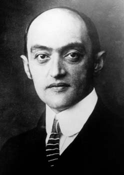
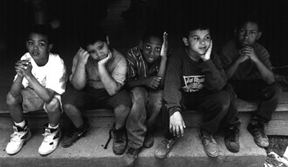

Modern Conservativism has its profits. There are some prophets these days who, seeing the game has changed, preach that the business cycle has vanished. There are many business cycles - when the shop owner arrives in the morning, and turns his door sign to "Open", he begins a new business cycle. And when he turns the placard over in the evening to read "Closed", the business cycle has ended. On Monday morning, many people begrudgingly get into their automobiles and race off to begin another work week - another business cycle - and celebrate the coming weekend when they get their paycheck and go out dancing for a change. Another business cycle concerns the investment of capital. When a businessman buys a new machine, he does so to produce something which, hopefully, will make a enough dough to pay off the machine and a little extra before it is junk. That is its business cycle.An economy - the agglomeration of such businessmen, their and workers and customers - goes through a similar process. One literate fellow by the name of Joseph Schumpeter thought about this for a long time ago, and speculated that there are large business cycles determined by technological change. The automobile, to give an example, is itself business cycle. In the beginning, there was oil. It was determined that oil could be refined to produce an ignitable liquid, the ignition of which could propel a vehicle across land to transport people in discrete and disperse little missiles rather than along a long rail. People could go about anywhere they want to, provided there were stretches of road and places to fill up along the way. And so this created a market - a whole economy revolving around a gas driven automobile - which required mechanics and transmission shops, drive-in restaurants and automatic tellers, shopping malls with lots of paved parking, and complex matrices of freeways sprawling to distant suburban housing additions and faster cars so that people could speed between there and here and back again, and of course the medical and insurance industries to patch them all up again when they propelled themselves into each other. According to Schumpeter, all these things taken together are a cycle, which ends when another technology comes along to replace it. The new business cycle - this new prolonged expansion attributed to either the new monetarism or Reaganomics - can be more understood in terms of Keynes. John Maynard Keynes was a British big guy - they dub 'Sir' - who in the Great Depression era proposed that a nation-state, which controls the production of money anyhow, could borrow up the wazoo and spend it in ways that would get businessmen off their tuffs and their machines cranked up and people back at work and everybody would be happy again. At that time, though, it took Hitler to get businessemen off their tuffs first. This time around it took Ronald Reagan. Reagan himself, of course, praised 'supply-siders' - it would be investors who led the expansion, he promised. But investors themselves relied on a large federal deficit and low interest rates to create a huge sum of money to invest. As long as wages are kept down, and it isn't taxed, most of it remains as profit to be reinvested again and again at a feverish pitch, raising - as we have witnessed - a lot of bull in the stock markets. Theoretically, Keynes is quite right. If one conceives of a national - or, presently, a global - economy as a vast economic machine, like a table saw or tractor, it is quite logical to borrow to buy that machine provided it can produce enough money to pay back its loan and make a little extra. In this same way, a huge federal deficit feeding a rising stock market creates more taxable revenue which - even at reduced tax rates - can pay off that debt. But, as with the table saw or tractor, a prudent businessman would hope to do so before it is junk. This is where the notion of business cycle is so important. We have, as a nation-state, reached the level in this economic expansion - this business cycle - that we no longer have to borrow to charge it up. On the basis of these higher earnings, the President and the collective Congress are able to put forth budgets approaching some balance - but we have yet to reach a point where we begin to pay it off. The critical factor in this grand enterprise is its duration, after which we again have to borrow to 'prime the pump.' Being so heavily invested in automobiles and warheads, we should consider this cycle not, as is the basis of election year strategists, as lasting 5 - 20 years, but consider, as did the Nathan Forrester model, in terms of century or two. Many commentators today have taken to speaking of the business cycle as if it had its own life of its own, like a god or demon. But in fact it is a composite of many factors - technology, which is to say a particular mix of capital and labor, geopolitical stability or lack thereof, and environmental constraints. An ill or illiterate population, for example, would likely have an affect on economic production, as would a polar meltdown. The last big dip in our national business cycle occurred when the Arab OPEC nations instituted an embargo of crude oil in the 1970's. This was a political change - a residual tremor from a neo-colonial to a global economy - rather than a technological one. Political in nature, it also proved very practical. It drove a response to make efficient use of it where oil was consumed; while at the same time extending the earning stream where it was produced. In the short term, though, there were profits to be made. Industry specific profits were called windfall profits and were nationalized through taxation. But there were other ripples in the fabric. The sharp rise in oil prices sent waves of price increases throughout the economy. Rising prices - called inflation - were matched by rising wages to keep up living standards among folks grown particular to having them, which fueled higher prices and wages and so on. There was not much profit in all this activity, any rise in price was consumed by wages and everything had to be adjusted back to some "real" measure of money. But this is precisely where the real profits lay. Real estate became the profiteer's boondoggle, for it had a relatively fixed supply. And as anyone with a college education knows, where there is increased demand in a market with fixed supply, the effect is rising prices. All the money pouring into the housing market fed an inflationary frenzy which its investors sought to hedge by pouring more money into the housing market. It is like a chain letter - a bubble profit - a shell game of smoke and mirrors. It promised quick double-digit profits and was very nearly risk free - because it was all insured by the FSLIC. The inflation rate for real estate at this time was higher than the composite index, and in many communities higher than the interest rate of these FSLIC- insured loans. This meant that a person could borrow a hundred thousand dollars and pay back later in dollars worth only maybe ninety-five thousand, then sell the house for more than he put in just by letting it sit idle while prices kept rising. This is a pretty good deal, don't you think? Well, it was until Jimmy Carter did a very nasty thing. He appointed Paul Volker to the federal bank. The federal bank basically controls how much money can be lent out by all the little private banks in the country. When banks can't get all they want, they raise the interest rate they have to charge their customers. When the interest rate rose above the inflation rate in this bubble market, the bubble profits burst. Hey, no problem, they're insured! We don't talk about where the profits were taken, but the debt was distributed to every tax payer in the country from now until doomsday. And the FSLIC - originally intended to provide loans for family homes - is no more. But the homeless problem remains. By the end of the century, the situation is different. Inflation is not a factor in most sectors of the economy. But what about stocks? We don't call it inflation, we call it profit; but how much of the bull in the stock market is new production capacity, and how much is old stock being traded? The distinction is important. Prices for stocks will rise just by introducing more money - a result of lower tax rates, especially on capital gains - independently of real productivity gains. When a new idea comes onto the market - like a start up company going public - its initial offering is bought up by big investors. However many shares at whatever price the big guys offer is what the company has to spend on long-term production. The big guys will then turn around and broker it to all the little investors buying and selling in the open market. The big guys aren't doing this for the company - they have their own business, which is brokering. They're going to offer less than what they themselves expect to get. And so on for subsequent layers of buying and selling, until the price settles down. The more money introduced into the system, the greater the price on any given stock will be. In the process there is a lot of profit taken, but the company bought and sold is pretty much out of the picture from the first go round. All subsequent profit is speculation - stock market inflation. Companies, too, can buy and sell stocks in their own or other companies. Even having a bank account is financing a brokerage firm somewhere. Any one who holds cash in savings, especially long term deposits, is likely to benefit from a rising market to a limited extent. But even so, to increase productive capacity, you eventually have to take money out of speculation and invest it in real productive capital. You can't keep it in the form of cash, and you can't keep buying and selling. These days the Dow Jones average is blipped across every tv screen and radio wave. A mild eupohoria has captured the minds of the rational idealists. This is, indeed, their hey day. Like all chain-mail, the illusion will last as long as someone keeps buying it. Anything, however, - and this is the point - can come along and end it. There is a real capcity there in the market - much innovation and hard work - it is well for everyone to want to prosper. But these speculators are like those who inflated the real estate market before. And, as before, it is not they who will most likely suffer. It will be those who can bear it least - who form the lowest ranks of the job market. 'The collapse in the stock market in the autumn of 1929 was implicit in the speculation that went before. The only question concerning that speculation was how long it would last. Sometime, sooner or later, confidence in the short-run reality of increasing common stock values would weaken. When this happened, some people would sell, and this would destroy the reality of increasing values. Holding for an increase would now become meaningless, the new reality would be falling prices. There would be a rush, pell-mell, to unload. This was the way past speculative orgies had ended. It was the way the end came in 1929. It is the way speculation will end in the future.' (J K Galbraith, The Great Crash, pp. 23-4) It need not end this way. It is up to you. When you buy stock in a corporation, pick something that humanity will need in the future. Have the certainty then that you have invested in your children's children or the kids across the street. Rest with that quiet confidence that the market will bear you out and that you will receive your due. Don't be swayed by fast talkers or quick returns. Stay true to your own heart. How can this be wrong? Link